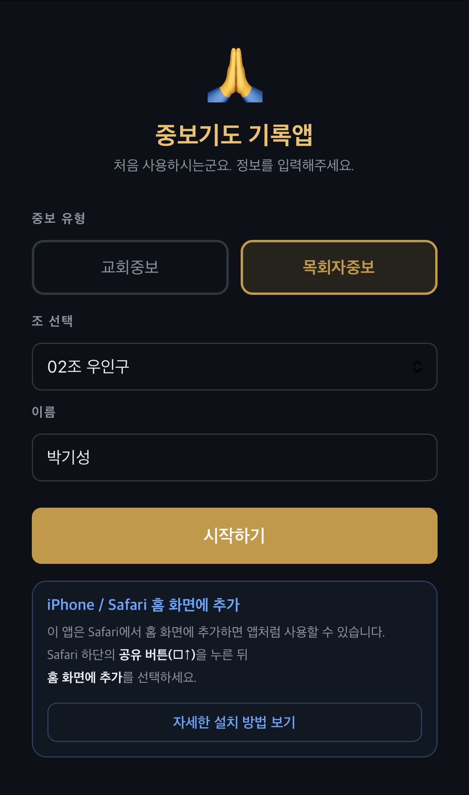
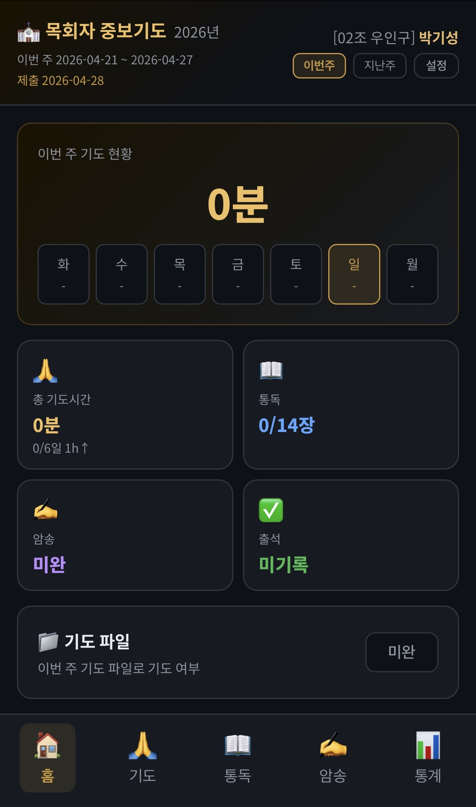
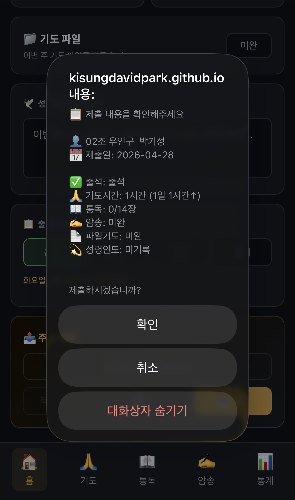
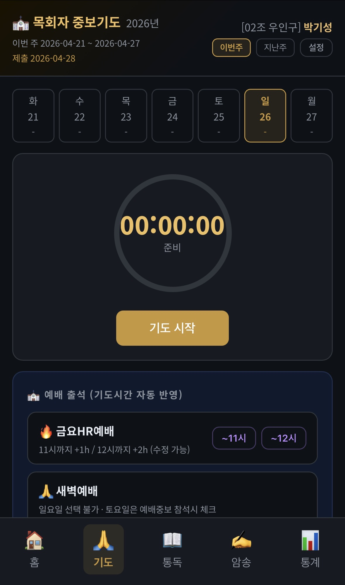
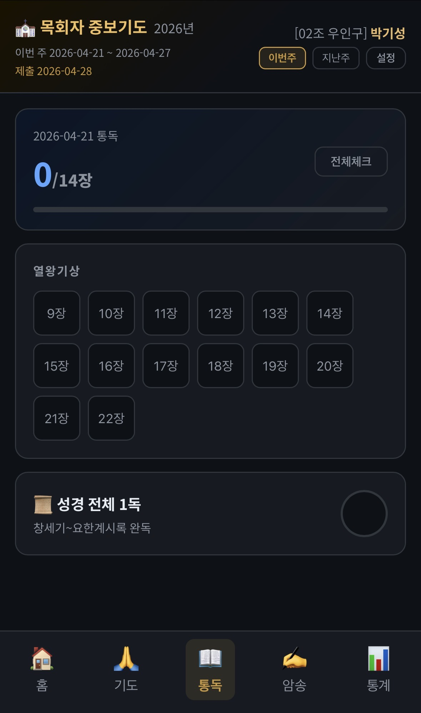
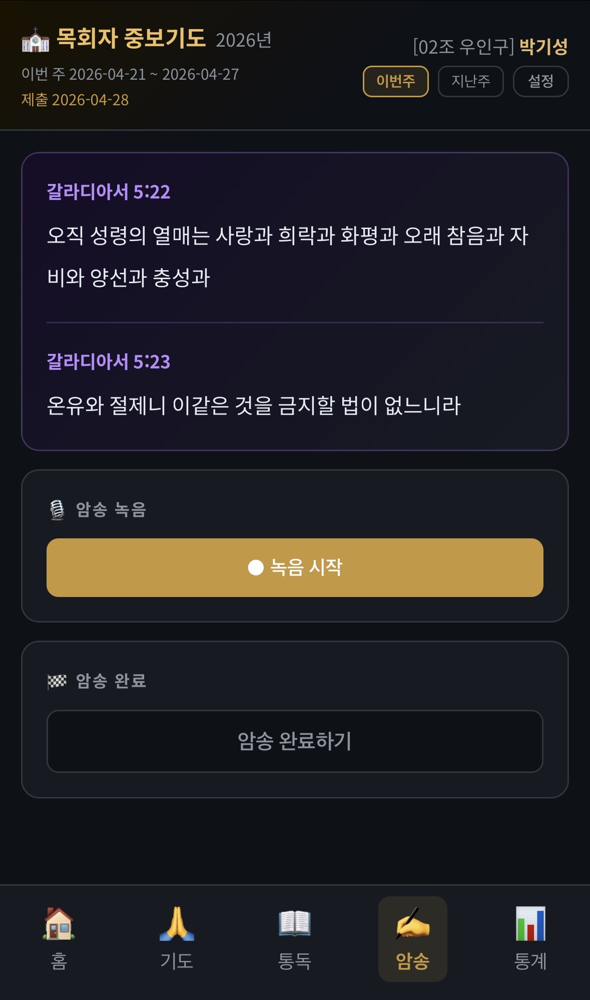
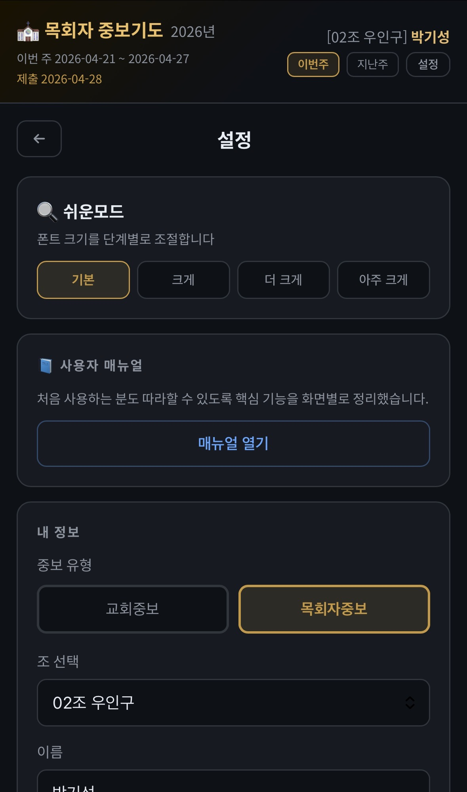

‹ 홈
🙏 사용 매뉴얼
앱 설치
첫 설정
홈
기도
통독
암송
제출
설정
01
📲 앱 설치 방법
🤖 Android (Chrome)
1. Chrome으로 앱 주소 접속
2. 주소창 오른쪽
⋮ 메뉴
→
"홈 화면에 추가"
3. 또는 하단에 뜨는
"설치"
배너 탭
🍎 iPhone / iPad (Safari)
1.
반드시 Safari
로 앱 주소 접속
2. 하단
공유 버튼 (□↑)
탭
3.
"홈 화면에 추가"
선택
4. 우측 상단
"추가"
탭
⚠️ iPhone은 반드시 Safari에서만 설치
가 가능합니다. Chrome 앱에서는 설치되지 않습니다.
02
⚙️ 처음 시작 설정
📱 실제 화면 — 처음 시작 설정

1
중보 유형 선택
목회자중보
또는
교회중보
중 하나를 탭하세요.
2
조 선택
유형에 따라 조 목록이 나타납니다. 본인의 조를 선택하세요.
3
이름 입력 후 시작
본인 이름 입력 후
시작하기
버튼을 탭하세요.
💡 나중에 변경 가능:
설정 탭 → 내 정보에서 언제든 수정할 수 있습니다.
03
🏠 홈 화면
📱 실제 화면 — 홈 탭

📊 이번 주 요약 카드
카드를 탭하면 해당 탭으로 이동합니다.
카드
내용
🙏 총 기도시간
누적 기도시간
/ 1시간 이상 달성 일수
📖 통독
완료 장수
/ 전체 장수
✍️ 암송
완료
/ 미완
✅ 출석
출석 상태
(미기록/출석/지각/조퇴/결석)
📁
기도 파일
이번 주 기도 파일로 기도했다면
완료
토글을 탭하세요.
🕊
성령의 인도하심
기도 중 받은 감동이나 응답을 메모하세요.
🗓 주간 전환
상단
이번 주 / 지난 주
버튼으로 주차를 전환할 수 있습니다.
주가 바뀌는 시점:
화요일 자정 (00:00)
📱 실제 화면 — 제출 확인 팝업

📤 구글 폼 제출
1. 출석 체크 선택 (필수)
2.
📤 제출
버튼 탭 → 제출 내용 확인 팝업
3.
확인
탭 → 구글 폼 자동 열림
4. 구글 폼에서 내용 확인 후 최종
제출
📨 텍스트 공유
구글 폼 제출 완료 후
📨 공유
버튼을 탭하면
카카오톡, 문자 등으로 기도 기록을 바로 공유할 수 있습니다.
⚠️ 텍스트 복사 / 공유는
구글 폼 제출 후에만
활성화됩니다.
04
🙏 기도 탭
📱 실제 화면 — 기도 탭

1
주간 기도 현황 확인
상단 요일 바에서 이번 주 각 날짜의 기도 현황을 확인합니다.
초록색
— 1시간 이상 달성
골드색
— 오늘
2
기도 시작
기도 시작
버튼을 탭하면 스톱워치가 시작됩니다.
다른 탭으로 이동해도 계속 카운트됩니다.
3
기도 종료 → 저장
종료
버튼을 탭하면 측정된 기도 시간이 해당 날짜에 자동 누적됩니다.
✏️ 시간 직접 수정
요일 카드의
수정
버튼 탭 → 시/분 스크롤로 직접 입력
📳 기도 종료 알림
종료
버튼을 누르면 기도 시간이 자동 저장됩니다.
· 다른 탭으로 이동해도 스톱워치는 계속 카운트됩니다.
· 화면이 꺼져도 시간이 정확하게 측정됩니다.
🔥 예배 출석 (기도시간 자동 반영)
새벽예배 (월~금)
참석일마다
+1시간
자동 반영 · 새벽예배 횟수 카운트
토요일 예배중보
참석 시
+1시간
자동 반영
※ 기도시간은 추가되지만 새벽예배 횟수에는 포함되지 않음
금요HR예배
·
~11시
버튼: +1시간 반영
·
~12시
버튼: +2시간 반영
반영 후 수정 버튼으로 시간 변경 가능
05
📖 통독 탭
📱 실제 화면 — 통독 탭

1
장 버튼 탭
읽은 장을 탭하면 체크됩니다. 다시 탭하면 해제됩니다.
2
전체체크
오른쪽 상단
전체체크
버튼으로 이번 주 통독 전체 완료 처리.
3
성경 전체 1독 완료
창세기~요한계시록 완독 시 하단
📜 성경 전체 1독
버튼을 체크하세요.
06
✍️ 암송 탭
📱 실제 화면 — 암송 탭

📜 암송 구절 표시
·
윗 절
: 직전 주 암송 구절 (복습용)
·
아랫 절
: 이번 주 암송 구절 (신규)
🎙
녹음으로 연습
● 녹음 시작
→ 암송 말하기 →
■ 중지
→ 재생으로 확인
✅
암송 완료 체크
암송 완료하기
버튼 탭 후 틀린 글자 수 선택
틀린 글자
점수
0자
(완벽)
1점
1~3자
0.5점
4자 이상
0점
미완료
0점
07
📤 주간 제출
📱 실제 화면 — 제출 확인
1
출석 체크 필수
홈 탭 → 출석 체크에서
출석 / 지각 / 조퇴 / 결석
중 선택
2
📤 제출 버튼 탭
제출 내용 확인 팝업이 나타납니다. 내용 확인 후
확인
을 탭하세요.
3
구글 폼에서 최종 제출
자동으로 열린 구글 폼에서 내용 확인 후
제출
탭
4
텍스트 공유
구글 폼 제출 후
📨 공유
버튼으로 카카오톡 등에 공유
⚠️ 주의:
텍스트 복사 / 공유 버튼은 구글 폼 제출 완료 후에만 활성화됩니다.
⚠️ 출석 미선택:
출석 체크를 선택하지 않으면 제출 버튼이 동작하지 않습니다.
지각 / 조퇴 입력
지각 또는 조퇴 선택 시 추가 항목이 나타납니다:
·
시간
입력 (예: 10분, 30분)
·
사유
입력 (예: 야근, 교통체증)
08
⚙️ 설정
📱 실제 화면 — 설정

🔍 쉬운모드
폰트 크기를 4단계로 조절합니다.
기본 → 크게 → 더 크게 → 아주 크게
설정값은 앱을 다시 열어도 유지됩니다.
💾 데이터 백업 / 복원
·
📥 내보내기
: 모든 기도 기록을 파일로 저장
·
📤 가져오기
: 백업 파일로 기록 복원
기기 교체나 앱 재설치 전 반드시 백업하세요.
⚠️ 기록 삭제 주의:
브라우저 설정에서 "쿠키 및 사이트 데이터"를 지우면 모든 기도 기록이 삭제됩니다. 반드시 백업 후 진행하세요.
👤 내 정보 변경
중보 유형, 조, 이름을 언제든 수정할 수 있습니다.